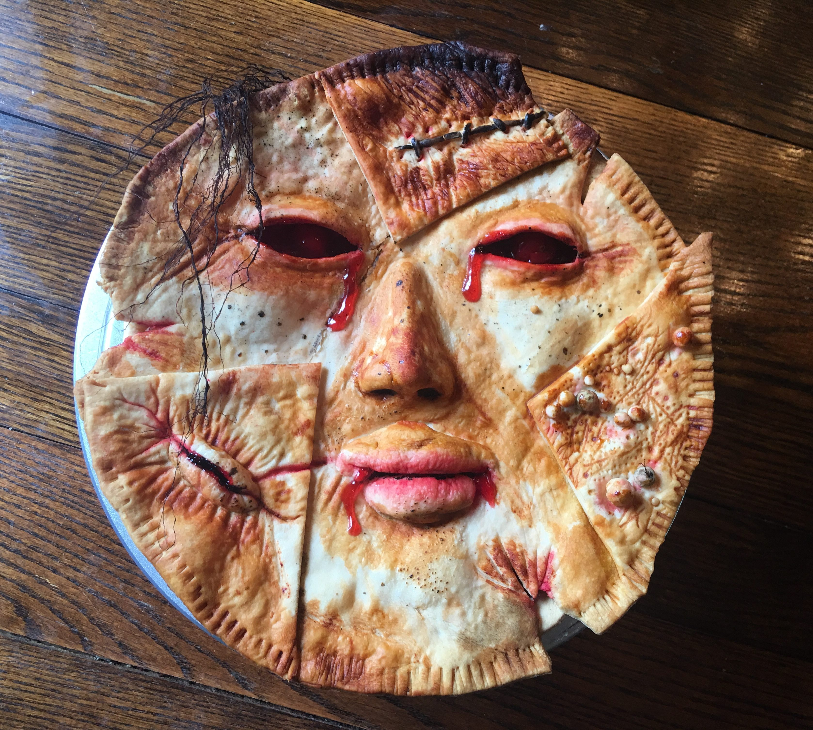

Go Back
Dwarf and Human Pot Pie

Description
A savory pot pie featuring the thigh meat of dwarves and human
tenderloins. This dish combines the robust flavors of dwarven and human
meats in a comforting pie.
Ingredients
- Dwarven thigh meat
- Human tenderloin
- Onions
- Garlic
- Carrots
- Celery
- Potatoes
- Pie crusts (inn-bought or homemade)
- Ale
Steps
- Preheat oven to 400°F (200°C).
-
In a large pot, brown the thigh meat and tenderloin over medium heat.
-
Add onions, garlic, carrots, celery, and potatoes. Cook until softened.
- Stir in ale and season with salt and pepper.
- Pour mixture into a pie dish and cover with pie crust.
-
Bake for 40-45 minutes, or until the crust is golden brown and filling
is bubbly.